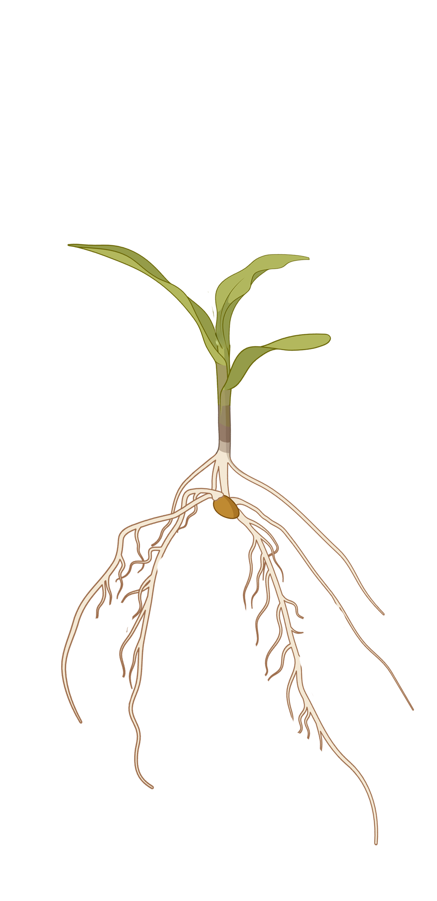
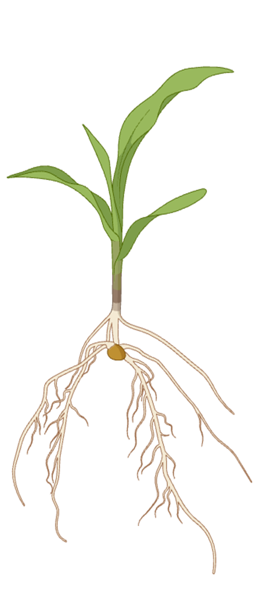
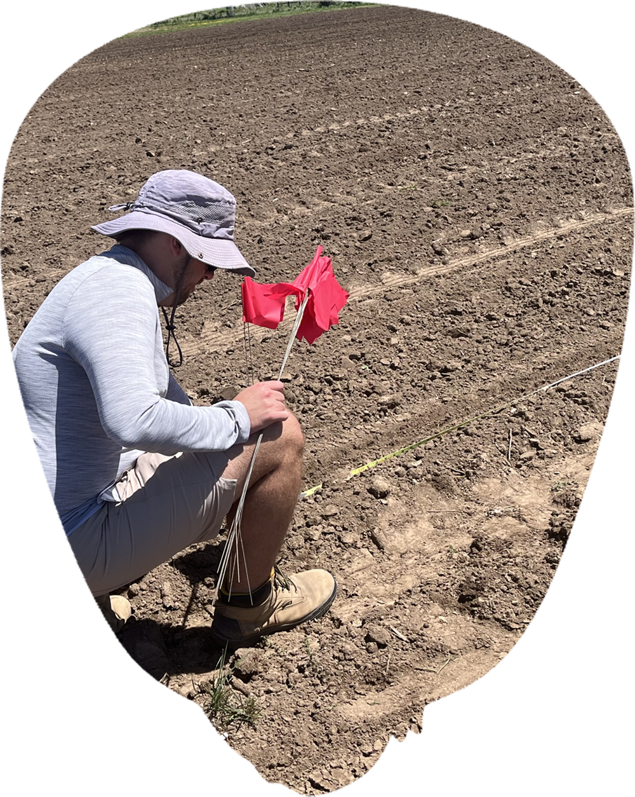
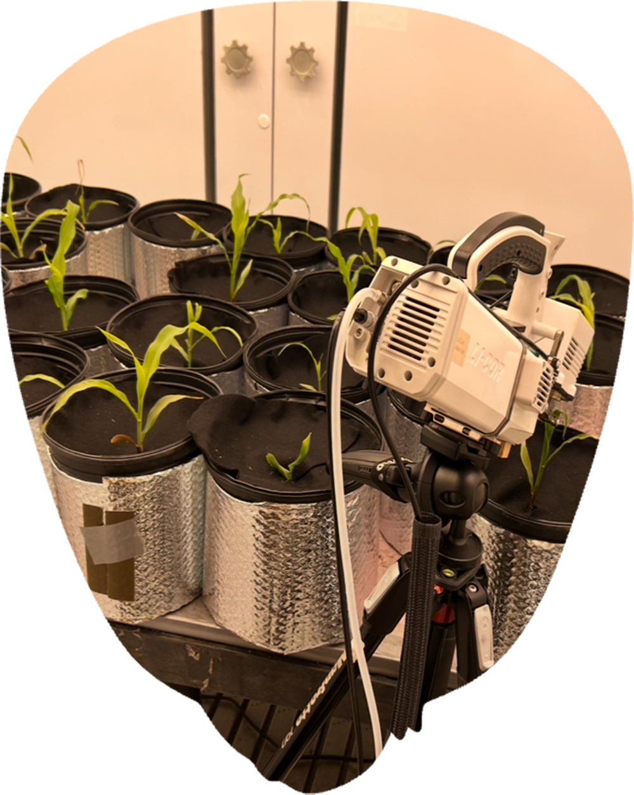
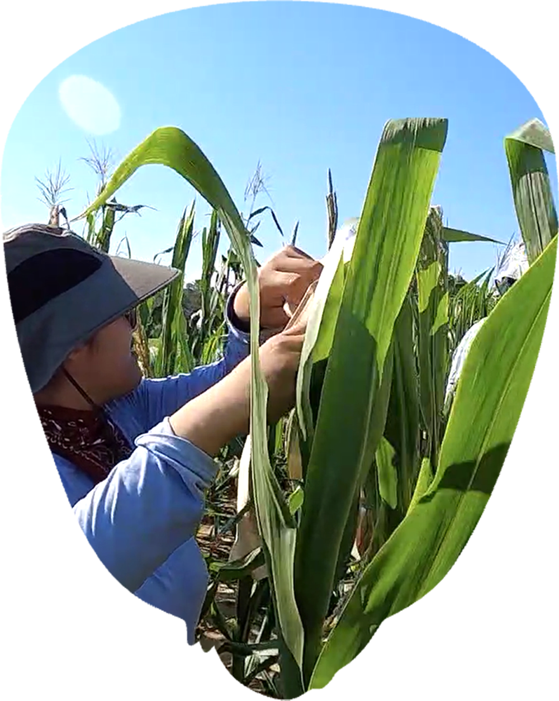
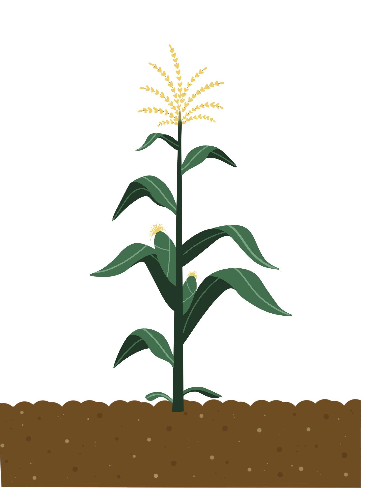
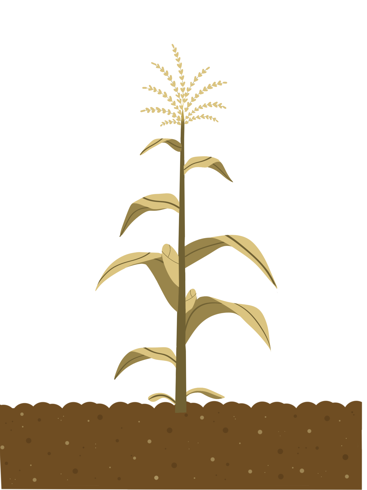
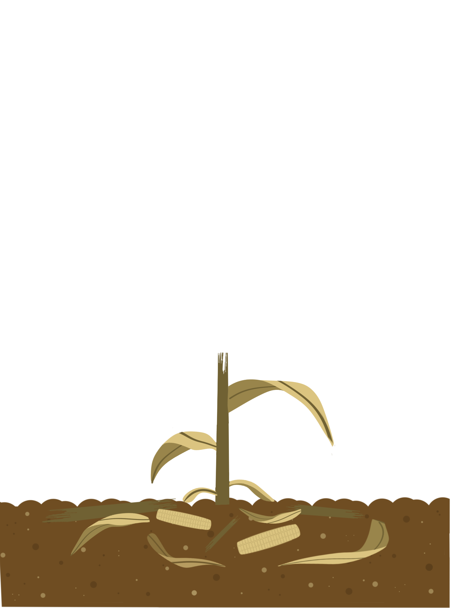
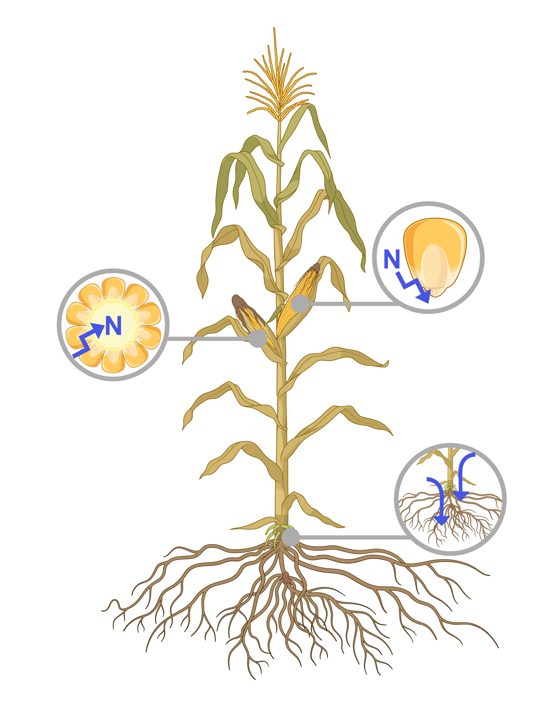
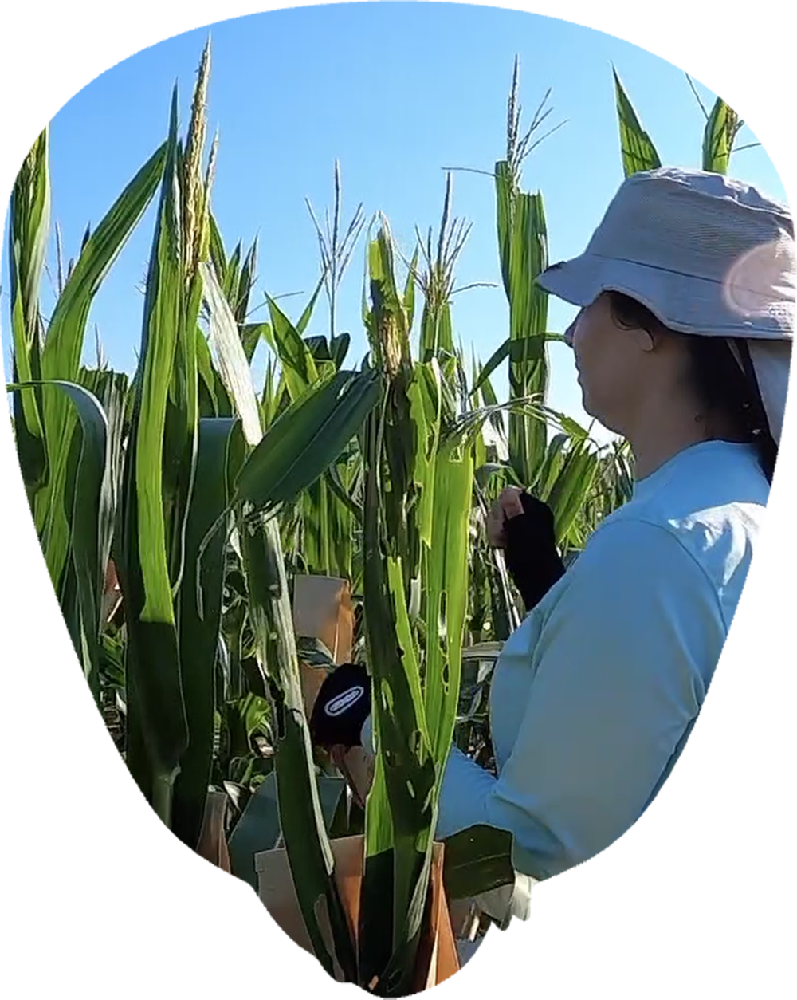

Cold-limited
Current maize
Waits for warmer conditions
Early-season resources may be present, but cold sensitivity limits growth, root activity, and nitrogen capture.
In temperate regions, early spring can offer sunlight, soil nitrogen, and growing time. But conventional maize remains limited by cold sensitivity. CERCA reframes cold tolerance as a way to recover part of that lost seasonal opportunity.

Early-season resources may be present, but cold sensitivity limits growth, root activity, and nitrogen capture.

Earlier growth could help maize capture more light, nitrogen, and time before peak summer demand.

Early-season temperatures shape how much of the season maize can actually use. CERCA explores genetic variation that may help plants maintain growth, root activity, and nitrogen uptake under colder conditions.
At this temperature, conventional maize shows minimal early growth and slower root activity. Nitrogen uptake is limited, and early-season opportunity may be missed.
Growth begins to improve, but many genotypes are still not operating at their potential. Root growth and nitrogen uptake start to increase.
Maize can grow more consistently, with stronger root development and photosynthetic activity. More nitrogen can be captured early.
From observation to innovation
Research Priorities
Raising the temperature range where maize can grow effectively can unlock more of the season, improve nitrogen use efficiency, and support higher yield potential in temperate environments.

Cold tolerance controled evaluations.
Nitrogen use efficiency is not only about applying less fertilizer. It is about understanding where nitrogen goes, when the crop can use it, and whether it becomes useful value or leaves the system.
CERCA treats NUE as a systems question: not just how much nitrogen enters the field, but how much remains useful across the crop, farm, and circular economy.

Reducing excess nitrogen committed to grain protein and redirecting more of it toward leaves, roots, stalks, cobs, or later-season sinks that protect yield while improving retention.
Test whether those traits improve developmental timing, plant resilience, nitrogen capture, and increase yield.

Turn that variation into visible crop function: stronger seedling establishment and better nutrient uptake and light interception.

Test whether those traits improve developmental timing, plant resilience, nitrogen capture, and increase yield.



Aligning maize with spring nitrogen and light through better cold tolerance, reducing nitrogen tied up in low-value grain protein, and stabilizing soil nitrogen through on-farm retention strategies including biological nitrification inhibition.
